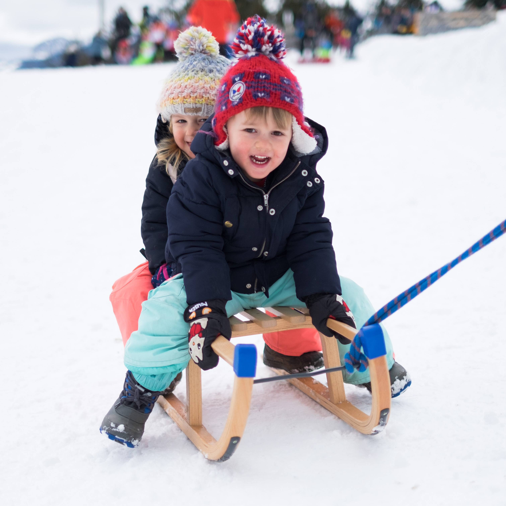

Dominique Attali - Short Bio
Degrees
-
12/22/2011
: Habilitation à Diriger des Recherches, Grenoble University.
-
10/13/1995
: Ph.D. in Computer Science, Grenoble University I. Mention
très honorable avec félicitation du jury.
-
1992
: DEA (Masters) in Computer Science, ENS de Lyon.
-
1989‐1993
: Student at Ecole Normale Supérieure de Lyon.
Employment
-
Since 10/2013
: CNRS Senior Researcher (Directeure de recherche CNRS),
Gipsa-lab.
-
Since 10/1998
: CNRS Researcher (Chargée de recherche CNRS),
Gipsa-lab.
-
2004
: Visiting Fellow at Duke University, USA (5 months).
-
1997‐1998
: ATER (Assistant professor), Grenoble University I.
-
1996‐1997
: Post-doc,
ETH Zürich, Switzerland. INRIA Grant
Grants
- ANR Project MAGA (2016‐2020)
- AGIR Project with I. Sivignon (2014‐2017)
- ANR Project TopData
(2013‐2017)
- ANR Project GIGA
(2009‐2013)
- ANR Project GEOTOPAL (2006‐2008)
- PICS with Duke and Geometrica (2006‐2008)
-
EU Network of Excellence AIM@SHAPE (2004‐2008)
PhD students & postdocs
- Bianca Dornelas (PhD visiting fellow, May-September 2022)
- Mattéo Clémot (M1 internship, 2021)
-
Maxime Sainlot (PhD student, 2015‐…)
-
Jocelyn Meyron (PhD student, 2015‐2018)
-
Bach Nguyen (PhD student, 2014‐2018)
-
Julien
André (PhD student, 2011‐2015)
-
David
Salinas (PhD student, 2010‐2013)
- Marc
Glisse (postdoctoral fellow, 2007‐2008)
- Franck
Hétroy (PhD student, 2000‐2003)
- Cédric
Gérot (PhD student, 1998‐2001)
Program committees
- EuroCG'22: European workshop on Computational Geometry 2022
- EuroCG'19:
European workshop on Computational Geometry 2019
- EuroCG'13:
European workshop on Computational Geometry 2013
- SoCG'12: ACM Symposium
on Computational Geometry 2012
- SGP'08: Eurographics Symposium on Geometry Processing 2008
- SMI'07: Shape Modeling International 2007
- SGP'07: Eurographics Symposium on Geometry Processing 2007
- SoCG'06: ACM Symposium on Computational Geometry 2006
- SMI'06: Shape Modeling International 2006
- SMI'05: Shape Modeling International 2005
- SGP'04:
Eurographics Symposium on Geometry Processing 2004
Thesis committees
-
PhDs:
David Loiseaux (U. Côte d'Azur, 06/12/2024) [Chairwoman];
Corentin Lunel (U. Gustave Eiffel, 23/09/2024);
Bianca Dornelas (Technische U. Graz, 20/10/2023) [Reviewer];
Owen Rouillé (U. Côte d'Azur, 05/09/2022);
Agathe Herrou (U. Lyon 1, 20/10/2022);
Charles Dumenil (U. de Lorraine, 10/05/2022) [Reviewer];
Thomas Magnard (U. Gustave Eiffel, 15/11/2021);
Julien Vuillamy (U. Nice, 17/09/2021) [Reviewer];
Raphaël Tinarrage (U. Paris-Saclay, 12/10/2020);
Siddharth Pritam (U. Nice, 18/06/2020) [Reviewer];
Siargey Kachanovich (U. Nice, 23/09/2019) [Reviewer];
Simon Giraudot (U. Nice, 22/05/2015) [Chairwoman];
Mickaël Buchet (U. Paris-Sud, 01/12/2014) [Reviewer];
Arijit Ghosh (U. Nice, 30/05/2012) [Reviewer];
Pedro de Castro (U. Nice, 25/10/2010);
John Chaussard (U. Paris-Est, 02/12/2010);
Nicolas Montana (U. Orsay, 27/05/2010);
Pooran Memari (U. Nice, 26/03/2010);
Jane Tournois (U. Nice, 04/11/2009);
Mathieu Brevilliers (U. Haute-Alsace, 09/12/2008);
Guihem Dupuy (UPPA, 18/12/2008);
Alexandra Bonnassie (U. Lyon I, 26/06/2003);
Dominique Rigaudière (U. de Bourgogne, 05/11/2002);
Franck Da (U. Nice, 21/01/2002).
- Habilitations:
Dominique Schmitt (21/12/2023) [Chairwoman];
Yukiko Kenmochi (06/12/2018).
Other activities
- Co-organizer of the JGA'2015 (Journées
de Géométrie Algorithmique 2015) with P. Alliez
and L. Castelli
Aleardi.
- Co-organizer of the JIG'2010
(Journées Informatique et Géométrie 2010) with I. Sivignon and C. Gérot.
- Co-organizer of the JGA'2005 (Journées
de Géométrie Algorithmique 2005) with F. Lazarus.
- Editorial Board of JoCG (2012-2015)
Personal information
Married, twins (a girl and a boy) born in 2016
